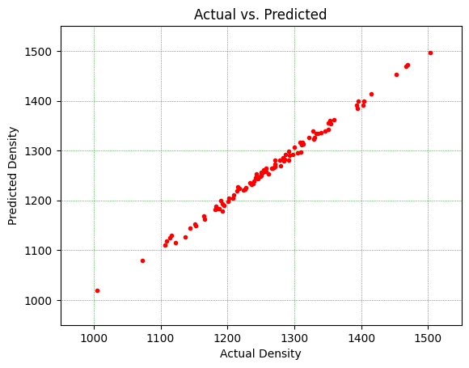

AutoML for Regression Model Screening
The following are the steps for using AutoML for a regression task:
Note: Setting the flag for featurization= ‘True’ generates represents molecules using 5 representation techniques.
Requires an input pandas dataframe consisting of two columns:
SMILES strings
target property values
If featurization = True, Molecules are represented as:
Coulomb matrix
RDKit Morgan (ECFP6 1024-bit) fingerprints
MACCs keys
RDKit hashed topological torsion
RDKit molecular descriptors (all)
Mordred molecular descriptors (currently using base Mordred)
Screens through various regressor models:
Single-core (runs regardless of multi_core value):
SVR (if n_datapoints<500)
Multi-core(set multi_core=True):
GradientBoostingRegressor (if n_datapoints<500)
(optional) XGBRegressor
(optional) LightGBM
Yields ‘n-best’ models, with optimized hyperparamters.
The output_dir argument specifies a folder that will be created wherever the code is run from, containing the following directory tree:
<output_dir>/
|-- output.log
|-- scores.csv
|-- best_model/
| |-- model.pkl # most non-MLP models
| |-- model_chemml_model.json # MLP case (plus possible extra model files)
| |-- scaler.pkl # present when scaler exists for chosen feature_key
| |-- feature_order.json
| |-- metadata.json
|-- .model_screener_artifacts/
| |-- <run_key_1>/
| |-- model.pkl # or MLP artifact files
| |-- <run_key_2>/
...
Load your data
We are using ChemML’s in-built dataset to demonstrate the minimum requirements to run AutoML.
[1]:
import pandas as pd
import numpy as np
from chemml.chem import Molecule
from chemml.datasets import load_organic_density
[2]:
molecules, target, dragon_subset = load_organic_density()
df=pd.concat([molecules, target], axis=1)
df = df.sample(100, random_state=42)
df
[2]:
| smiles | density_Kg/m3 | |
|---|---|---|
| 361 | c1scc(n1)c1ncc(s1)c1c(ccc2c1cccc2)c1cncs1 | 1328.35 |
| 73 | S1CC(SC(C1)C1CCCC1)c1cocc1c1ccccc1 | 1143.80 |
| 374 | N1CNC(NC1)c1sccc1C1(CSCCS1)c1cccs1 | 1351.33 |
| 155 | c1nc(c(s1)c1nsnc1)c1csc(n1)c1cccs1 | 1466.57 |
| 104 | Oc1ccc2c(c1c1cocc1)c(ccc2)c1ccccn1 | 1207.67 |
| ... | ... | ... |
| 347 | c1ccc(cn1)c1ncsc1c1scnc1c1ccc2c(c1)cccc2 | 1269.53 |
| 86 | c1cnc(cn1)c1coc(c1)c1nccc(c1)c1cccc2c1cccc2 | 1209.81 |
| 75 | OC1NCN(CN1)c1cccc2c1ccc(c2)C1CSCCS1 | 1282.86 |
| 438 | Sc1cc2c(cc1c1ccc3c(c1)cccc3)cccc2C1CCCC1 | 1122.68 |
| 15 | CC1CCC(C1)C1CCCC1c1cccs1 | 1005.60 |
100 rows × 2 columns
Run autoML for a regression task
Since we have not provided any feature set, we can use AutoML’s in-built featurization to screen through feature representations and find the most suitable feature set for our data.
[3]:
from chemml.autoML import ModelScreener
MS = ModelScreener(df, target="density_Kg/m3", featurization=True, smiles="smiles",
screener_type="regressor", output_dir="automl_results")
scores = MS.screen_models(n_best=10, multi_core=False)
Converting SMILES to ChemML Molecule objects: 100%|██████████| 100/100 [00:03<00:00, 28.20it/s]
featurizing molecules in batches of 6 ...
100/100 ━━━━━━━━━━━━━━━━━━━━━━━━━━━━━━━━━━━━━━━━━━━━━━━━━━ 13s 126ms/step
Merging batch features ... [DONE]
Calculating RDKit descriptors: 100%|██████████| 100/100 [00:01<00:00, 85.99it/s]
Normalizing Molecule input: 100%|██████████| 100/100 [00:00<?, ?it/s]
100%|██████████| 100/100 [00:02<00:00, 48.08it/s]
Cleaning feature sets to remove constant, highly correlated, and low-variance features...
Feature set 'CoulombMatrix' cleaned: 26 features retained.
Feature set 'morganfingerprints_radius3' cleaned: 247 features retained.
Feature set 'MACCS_radius3' cleaned: 48 features retained.
Feature set 'hashedtopologicaltorsion_radius3' cleaned: 82 features retained.
Feature set 'rdkit_descriptors' cleaned: 92 features retained.
Feature set 'mord_descriptors' cleaned: 409 features retained.
split done!
Single-core complete
------------------------- Screening complete for feature set CoulombMatrix, time taken: 8.581 seconds -------------------------
split done!
Single-core complete
------------------------- Screening complete for feature set morganfingerprints_radius3, time taken: 9.818 seconds -------------------------
split done!
Single-core complete
------------------------- Screening complete for feature set MACCS_radius3, time taken: 9.35 seconds -------------------------
split done!
Single-core complete
------------------------- Screening complete for feature set hashedtopologicaltorsion_radius3, time taken: 9.209 seconds -------------------------
split done!
Single-core complete
------------------------- Screening complete for feature set rdkit_descriptors, time taken: 11.241 seconds -------------------------
split done!
Single-core complete
------------------------- Screening complete for feature set mord_descriptors, time taken: 11.417 seconds -------------------------
[4]:
scores
[4]:
| ME | MAE | MSE | RMSE | MSLE | RMSLE | MAPE | MaxAPE | RMSPE | MPE | MaxAE | deltaMaxE | r_squared | std | time(seconds) | Model | parameters | Feature | run_key | |
|---|---|---|---|---|---|---|---|---|---|---|---|---|---|---|---|---|---|---|---|
| 24 | -1.165839 | 6.548663 | 64.357274 | 8.022299 | 0.000041 | 0.006411 | 0.519401 | 1.227364 | 0.642961 | -0.109150 | 13.696279 | 25.721771 | 0.990377 | 81.777502 | 0.779308 | Ridge | {'alpha': 24.6, 'copy_X': True, 'fit_intercept... | mord_descriptors | Ridge_mord_descriptors_c1fb1891b1d34cbdaf986cc... |
| 28 | -1.780404 | 7.570432 | 65.826309 | 8.113341 | 0.000040 | 0.006317 | 0.594852 | 1.035899 | 0.632973 | -0.146564 | 13.760363 | 23.502871 | 0.990157 | 81.777502 | 3.895243 | ElasticNet | {'alpha': 0.10000000000000002, 'copy_X': True,... | mord_descriptors | ElasticNet_mord_descriptors_8d735767e52c42c79a... |
| 27 | -0.832714 | 8.689409 | 104.796914 | 10.237036 | 0.000060 | 0.007748 | 0.669774 | 1.270207 | 0.776550 | -0.059801 | 17.726883 | 31.832373 | 0.984330 | 81.777502 | 2.997654 | Lasso | {'alpha': 0.10000000000000002, 'copy_X': True,... | mord_descriptors | Lasso_mord_descriptors_7c5ff0e6fb9e44a5857ee55... |
| 26 | -3.892511 | 9.395611 | 137.754552 | 11.736889 | 0.000085 | 0.009234 | 0.742650 | 1.788322 | 0.924081 | -0.295887 | 21.893891 | 42.189124 | 0.979401 | 81.777502 | 1.260182 | SVR | {'C': 6.2105263157894735, 'cache_size': 200, '... | mord_descriptors | SVR_mord_descriptors_82340791fa3b4210aa16ae5c4... |
| 21 | -4.271152 | 13.444280 | 214.341436 | 14.640404 | 0.000137 | 0.011693 | 1.074177 | 1.532998 | 1.172778 | -0.373718 | 19.344591 | 37.910187 | 0.967949 | 81.777502 | 1.469364 | Lasso | {'alpha': 0.10000000000000002, 'copy_X': True,... | rdkit_descriptors | Lasso_rdkit_descriptors_5b8c455e3bca409685435f... |
| 22 | -6.941877 | 14.424102 | 272.929168 | 16.520568 | 0.000174 | 0.013208 | 1.154577 | 2.078724 | 1.329172 | -0.588298 | 25.994649 | 44.270452 | 0.959189 | 81.777502 | 1.616326 | ElasticNet | {'alpha': 0.10000000000000002, 'copy_X': True,... | rdkit_descriptors | ElasticNet_rdkit_descriptors_93cd6f24bbf0420b8... |
| 23 | -8.077278 | 16.409874 | 306.237973 | 17.499656 | 0.000195 | 0.013954 | 1.306025 | 2.220779 | 1.404272 | -0.671101 | 27.389085 | 45.952560 | 0.954208 | 81.777502 | 3.900002 | SVR | {'C': 11.421052631578947, 'cache_size': 200, '... | rdkit_descriptors | SVR_rdkit_descriptors_31fa85c2a77d4ba59b870eae... |
| 19 | -8.890544 | 15.248120 | 310.362742 | 17.617115 | 0.000201 | 0.014181 | 1.227860 | 2.276451 | 1.429814 | -0.749505 | 28.075700 | 44.082699 | 0.953591 | 81.777502 | 0.583344 | Ridge | {'alpha': 9.9, 'copy_X': True, 'fit_intercept'... | rdkit_descriptors | Ridge_rdkit_descriptors_98d7a8cc1d394506be9458... |
| 25 | -8.837472 | 28.483415 | 954.271945 | 30.891292 | 0.000601 | 0.024515 | 2.273317 | 4.412876 | 2.476895 | -0.675980 | 54.890000 | 85.104286 | 0.857306 | 81.777502 | 0.850017 | DecisionTreeRegressor | {'ccp_alpha': 0.0, 'criterion': 'squared_error... | mord_descriptors | DecisionTreeRegressor_mord_descriptors_1e6ffed... |
| 10 | 13.175179 | 25.564536 | 1008.856455 | 31.762501 | 0.000573 | 0.023947 | 1.947052 | 4.211498 | 2.377639 | 0.950111 | 58.775247 | 105.898937 | 0.849144 | 81.777502 | 1.257556 | Lasso | {'alpha': 0.10000000000000002, 'copy_X': True,... | MACCS_radius3 | Lasso_MACCS_radius3_1a18e958419847799443b8c6eb... |
Validating AutoML-generated model
Since ChemML v1.3.4, AutoML outputs the best model and required scaler and feature order as easy-to-import files. A quick demonstration of the model loading workflow is given below:
[5]:
import pickle
import json
with open('automl_results/best_model/metadata.json', 'r') as f:
metadata = json.load(f)
with open('automl_results/best_model/feature_order.json', 'r') as f:
feature_order = json.load(f)
with open("automl_results/best_model/model.pkl", "rb") as f:
loaded_model = pickle.load(f)
with open("automl_results/best_model/scaler.pkl", "rb") as f:
loaded_scaler = pickle.load(f)
Metadata isn’t necessary for model validation, but gives us a lot of context from the AutoML screening workflow.
[6]:
metadata
[6]:
{'artifact_schema_version': 1,
'model_name': 'Ridge',
'feature_key': 'mord_descriptors',
'run_key': 'Ridge_mord_descriptors_c1fb1891b1d34cbdaf986cca0c5375d6',
'screener_type': 'regressor',
'parameters': {'alpha': 24.6,
'copy_X': True,
'fit_intercept': True,
'max_iter': None,
'positive': False,
'random_state': None,
'solver': 'auto',
'tol': 0.0001},
'metrics': {'ME': -1.1658386080855963,
'MAE': 6.5486628603416195,
'MSE': 64.35727445359389,
'RMSE': 8.022298576691963,
'MSLE': 4.1095421280610533e-05,
'RMSLE': 0.006410571057293612,
'MAPE': 0.5194005241242112,
'MaxAPE': 1.227364087808024,
'RMSPE': 0.642960942887699,
'MPE': -0.10914957390993163,
'MaxAE': 13.696278592258523,
'deltaMaxE': 25.72177133371156,
'r_squared': 0.9903765684081806,
'std': 81.77750192442905,
'time(seconds)': 0.7793076038360596},
'model_serializer': 'pickle',
'model_artifact_dir': 'model_artifact',
'scaler_file': 'scaler.pkl',
'feature_order_file': 'feature_order.json',
'timestamp': 'Mon Jul 27 13:59:05 2026'}
feature_order ensures that the trained model sees features in the exact same order as trained.
[7]:
feature_order[:5]
[7]:
['nBase', 'SpAbs_A', 'SpDiam_A', 'VE1_A', 'VR1_A']
[8]:
from chemml.chem import Molecule
from sklearn.preprocessing import StandardScaler
from sklearn.model_selection import train_test_split
import tqdm
from chemml.chem import Mordred
from sklearn.svm import SVR
mol_objs_list = []
for i, smi in enumerate(tqdm.tqdm(df["smiles"], desc="Converting SMILES to ChemML Molecule objects")):
mol = Molecule(smi, 'smiles')
mol.hydrogens('add')
try:
mol.to_xyz('MMFF', maxIters=10000, mmffVariant='MMFF94s')
mol_objs_list.append(mol)
except Exception as e:
print(f"\nUnable to process SMILES: {smi}; Error: {e}")
# self.discarded_indices.append(i)
loaded_mols = mol_objs_list
features = Mordred().represent(loaded_mols).drop(columns=['SMILES'])[feature_order].values
targets = df["density_Kg/m3"].values
X_test = loaded_scaler.transform(features)
y_pred = loaded_model.predict(X_test)
Converting SMILES to ChemML Molecule objects: 100%|██████████| 100/100 [00:03<00:00, 28.33it/s]
The loaded_model object can be treated just like any model object
[9]:
loaded_model
[9]:
Ridge(alpha=24.6)In a Jupyter environment, please rerun this cell to show the HTML representation or trust the notebook.
On GitHub, the HTML representation is unable to render, please try loading this page with nbviewer.org.
Parameters
[10]:
targets[:5], y_pred[:5]
[10]:
(array([1328.35, 1143.8 , 1351.33, 1466.57, 1207.67]),
array([1339.22902423, 1145.02145831, 1342.43338352, 1469.29736858,
1204.22178333]))
[11]:
from chemml.utils import regression_metrics
regression_metrics(targets, y_pred)
[11]:
| ME | MAE | MSE | RMSE | MSLE | RMSLE | MAPE | MaxAPE | RMSPE | MPE | MaxAE | deltaMaxE | r_squared | std | |
|---|---|---|---|---|---|---|---|---|---|---|---|---|---|---|
| 0 | -0.116584 | 4.755083 | 34.813914 | 5.900332 | 0.000023 | 0.004802 | 0.381633 | 1.369011 | 0.480841 | -0.018473 | 14.131558 | 27.898336 | 0.995465 | 87.617825 |
[12]:
from chemml.visualization import scatter2D, SavePlot, decorator
import pandas as pd
%matplotlib inline
df_viz = pd.DataFrame()
df_viz["Actual"] = targets.reshape(-1,)
df_viz["Predicted"] = y_pred.reshape(-1,)
sc = scatter2D('r', marker='.')
fig = sc.plot(dfx=df_viz, dfy=df_viz, x="Actual", y="Predicted")
dec = decorator(title='Actual vs. Predicted',xlabel='Actual Density', ylabel='Predicted Density',
xlim= (950,1550), ylim=(950,1550), grid=True,
grid_color='g', grid_linestyle=':', grid_linewidth=0.5)
fig = dec.fit(fig)
# print(type(fig))
sa=SavePlot(filename='Parity',output_directory='./automl_results/val/images',
kwargs={'facecolor':'w','dpi':330,'pad_inches':0.1, 'bbox_inches':'tight'})
sa.save(obj=fig)
fig.show()
The Plot has been saved at: .\./automl_results/val/images/Parity.png
